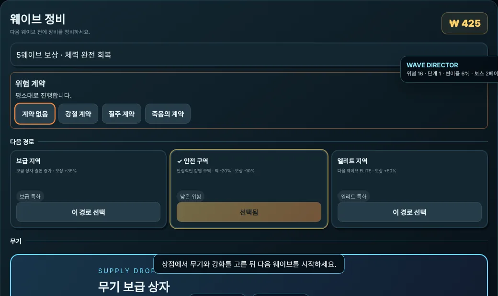

한 판은 이렇게 흘러갑니다
- 웨이브를 버팁니다
사방에서 몰려오는 적을 피하며 쏩니다. 위험하면 대시로 빠져나오고, 게이지가 차면 궁극기를 씁니다.
- 상점에서 정비합니다
번 돈으로 무기를 사고 강화합니다. 다음 전투의 경로와 위험 계약도 여기서 고릅니다.
- 더 강해져 돌아갑니다
무기를 진화시키고 합쳐 가며 100웨이브 이후의 붕괴 구간까지 도전합니다.
같은 판이 나오지 않습니다
- 50종이 넘는 무기와 10가지 탄환 색상
- 색상마다 화상, 폭발, 중독, 관통, 유도처럼 전투 방식이 바뀝니다. 조건을 맞추면 특수 무기로 합체합니다.
- 12개 직업, 직업마다 궁극기 2종
- 군인, 과학자, 의무병, 소방관 등 직업에 따라 능력과 외형이 달라집니다.
- 함께 싸우는 펫
- 공격, 회복, 방어 펫을 여러 마리 조합합니다. 환생할수록 함께 데려갈 수 있는 수가 늘어납니다.
- 매번 달라지는 전장
- 블러드 문 같은 이벤트 웨이브, 엘리트 변이, 비와 안개, 아침부터 밤까지 바뀌는 시간이 판마다 변수가 됩니다.

혼자도, 친구와도
- 솔로 플레이난이도 네 단계 중 하나를 골라 어디까지 가는지 시험합니다.
- 온라인 협동최대 4명이 함께합니다. 코드로 친구를 부르거나 공개 방과 랜덤 매치로 들어갑니다.
- 일일 도전매일 규칙이 바뀌고, 그날은 모두가 같은 조건으로 기록을 겨룹니다.
- 온라인 랭킹내 최고 기록을 다른 생존자와 비교합니다.
조작
- WASD
- 이동
- 마우스
- 조준과 사격
- Shift
- 대시
- F
- 근접 공격
- Q
- 궁극기
- 모바일
- 이동 스틱과 조준 스틱
자주 묻는 질문
정말 무료인가요?
네. 게임 안에 결제 기능이 없습니다.
설치하거나 가입해야 하나요?
아니요. 링크를 열고 바로 시작하면 됩니다. Windows 앱은 원하는 사람만 게임 메뉴에서 받으면 됩니다.
휴대폰에서도 되나요?
네. 터치 조작을 지원하고, 사양에 맞춰 그래픽 모드를 낮출 수 있습니다.
기록은 어떻게 저장되나요?
기본으로 지금 쓰는 기기에 저장됩니다. 계정을 만들면 다른 기기에서도 이어서 할 수 있습니다.